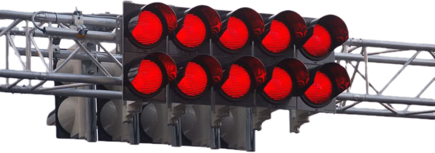
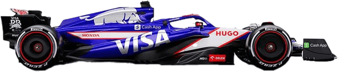

레이싱은 단순한 속도 경쟁이 아니다. 시속 300km가 넘는 속도,
5G에 달하는 압력, 최대 60도의 열기 속에서 드라이버는 매 순간
생존을 위해 싸운다.

EXTREME FACTS
레이스카 내부의 온도는 최대 60도까지 올라가고, 콕핏 안에서 드라이버는
2시간 가까이 집중력을 유지해야 한다. 여기에 코너마다 5G 이상의 압력이 몸을 짓누른다.
Extreme Breaking Vision Loss
F1 드라이버는 시속 300km 이상에서 브레이크를 밟을 때 약 5~6G의 강한 감속을 견딘다.
이때 혈액이 순간적으로 앞으로 쏠리면서 시야가 좁아지거나 흐려지는 ‘터널 비전’ 현상이 발생한다.
그럼에도 드라이버는 동시에 다음 코너, 차 간격, 타이어 상태를 계산해야 한다.
인간이 감당할 수 있는 한계에 가장 근접한 순간이다.
SURVIVAL RACE
PHYSICS OF SURVIVAL
F1 드라이버의 몸에는 레이스 내내 극단적인 물리적 힘이 작용한다.
단순히 빠르게 달리는 것이 아니라, 몸이 견딜 수 있는 한계와의 싸움이다.
G-포스, 온도, 반응속도는 모두 생존과 직결되는 변수다.
이 변수들이 조금만 어긋나도, 레이스는 곧바로 “위험”으로 전환된다.
이 수치는 경기, 트랙, 드라이버에 따라 달라지지만,
공통점은 하나다. “평범한 몸으로는 버틸 수 없다”는 것.

MENTAL · PHYSICAL
두뇌와 근육, 동시에 풀가동
레이스 중 드라이버는 초당 수십 개의 정보를 처리한다.
다음 코너의 각도, 브레이킹 포인트, 타이어 마모, 연료 잔량, 팀 라디오의 지시까지.
이 모든 것을 받아들이면서도, 스티어링과 페달은 단 0.1초의 실수도 허용하지 않는다.
그래서 F1 드라이버의 훈련은 헬스장에서 끝나지 않는다.
반응속도 훈련, 시각-인지 훈련, 멀티태스킹 훈련까지 모두 “생존 스펙”이다.
THE REAL BATTLE BEGINS HERE
트랙 위에서는 매 순간이 전쟁이다.
냉정함을 잃는 순간, 승리는 사라진다
ABOUT SURVIVAL
F1은 단순히 “누가 더 빨리 가는가”의 문제가 아니다.
시속 300km의 속도, 타이어가 비명을 지르는 코너, 그리고 언제든 사고로 이어질 수 있는 위험.
이 모든 것을 버티는 순간, 드라이버는 단순한 선수에서 “생존자”가 된다.
BECOME A SURVIVOR
LOSE 4 KILOS IN A SINGLE RACE
레이스카 내부의 온도는 최대 60도까지 올라가고,
방열 효과가 제한적인 콕핏 안에서 드라이버는 2시간 가까이
집중력을 유지해야 한다.
숨을 고르고, 스티어링 휠을 쥐고,
브레이크와 엑셀을 반복하는 동안 몸에서는 4리터 가까운 땀이 빠져나간다.
그래서 한 경기가 끝나면 드라이버의 몸무게는 4킬로그램 정도 줄어든다.
그 무게만큼 사라진 것은 단순한 수분이 아니라,
트랙 위에서 버텨낸 시간과 집중, 그리고 생존 그 자체이다.
VICTORY STORIES
INTERESTING THINGS ABOUT F1
F1 드라이버는 시속 300km에서도 책의 문장을 읽을 수 있을 정도로
시야가 안정적이라고 말한다. 차체와 서스펜션이 진동을 최대한
억제하도록 설계되어 있기 때문이다.
경주 중 심박수 180~200 유지
전투기 조종사 수준의 G-포스를 연속으로 견뎌야 함
목, 코어 근육을 위한 특수 트레이닝 필수
PIT STOPS · PERFECT SECONDS
F1에서 피트스톱은 단순히 타이어만 갈고 나가는 시간이 아니다.
2~3초 사이에 20명이 넘는 크루가 동시에 움직이는, 하나의 안무 같은 작업이다.
잭맨이 차를 들어 올리는 순간, 네 개의 휠건이 동시에 너트를 풀고,
타이어 크루가 새 타이어를 끼우고, 다시 조여서 차를 내려보낸다.
이 과정에서 단 한 명만 늦어도, 순위는 바로 몇 계단씩 떨어진다.
TYRE STRATEGY · WHY COLOURS MATTER
F1 타이어는 단순히 검은 고무 덩어리가 아니다.
어떤 컴파운드를 선택하느냐에 따라, 레이스의 전체 전략이 달라진다.
빠르게 달릴 수 있지만 금방 닳아버리는 타이어.
예선이나 스프린트, 또는 레이스 후반 추격전을 위해 자주 사용된다.
MEDIUM · 미디엄 타이어
수명과 그립의 균형이 좋은, 가장 “무난한” 선택.
대부분의 팀이 기본 전략으로 택하는 타이어다.
HARD · 하드 타이어
잘 닳지 않는 대신, 워밍업이 느리고 초반 그립이 떨어진다.
하지만 한 번 온도가 올라가면 오래 버티며 스틴트를 길게 끌고 갈 수 있다.
대부분의 그랑프리에서 팀은 서로 다른 두 종류 이상의 타이어를 반드시 사용해야 한다.
즉, 어떤 타이어를 언제 쓰느냐가 곧 “전략”이 된다.
F1 팀은 왜 수가 적을 수밖에 없는가?
F1 한 팀을 운영하기 위한 연간 예산은 수천억 단위에 이른다.
차 한 대, 연구 개발, 장비, 물류, 인건비까지 모든 것이 비싸다.
그렇기 때문에 아무 팀이나 참가할 수 없고, 팀 수는 자연스럽게 제한된다.
“들어오는 것”보다 “버티는 것”이 더 어렵다.
F1 머신은 사실상 “바퀴 달린 전투기”에 가깝다.
공기역학, 엔진 설계, 에너지 회수 시스템, 데이터 분석 등
첨단 기술이 결합되어 있고, 이를 감당하고 유지할 수 있는 회사는
전 세계에서도 극히 제한적이다.
한 팀에는 수백 명에서 천 명이 넘는 인원이 필요하다.
드라이버는 그중 단 두 명일 뿐이다.
레이스 전략, 타이어, 엔진, 섀시, 데이터, 마케팅까지.
수많은 사람들이 함께 움직일 때 비로소 한 대의 차가 트랙 위를 달릴 수 있다.
경기 중 요절한 선수
AYRTON SENNA
F1 역사상 가장 위대한 드라이버 중 한 명으로 불리는 아일톤 세나.
1994년 산마리노 그랑프리 도중 탬부렐로 코너에서의 사고로 세상을 떠났다.
그의 죽음은 전 세계에 큰 충격을 주었고, 그 이후 F1의 트랙 설계,
차체 강도, 헬멧, 의료 시스템까지 안전 규정은 근본적으로 바뀌게 되었다.
ROLAND RATZENBERGER
세나와 같은 주말, 예선에서 프런트윙이 파손된 상태로 고속 주행을 이어가다
벽과 충돌해 사망한 롤란트 라첸베르거.
이 연속된 두 사고는 F1 역사상 가장 충격적인 주말로 기록되며,
현대 F1 안전 규정의 출발점이 되었다.